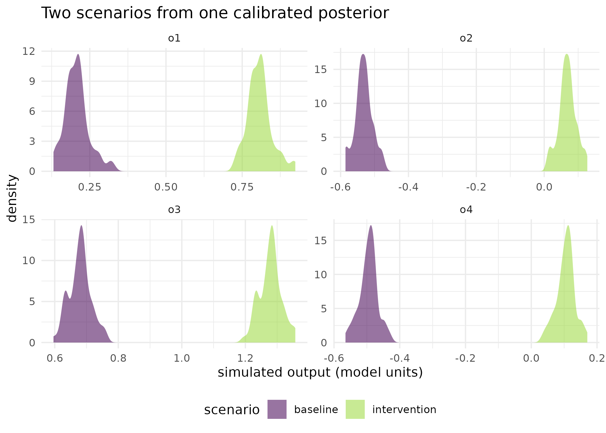

Did the management change shift the simulated distribution?
Source:vignettes/kernR-drdate-scenario.Rmd
kernR-drdate-scenario.Rmd
library(kernR)
library(PESTO)
#>
#> Attaching package: 'PESTO'
#> The following object is masked from 'package:kernR':
#>
#> verify_manifestWhy
A systems modeller has one calibrated crop model and two management rules. I calibrated the model once against the site record, then ran the posterior forward twice: once under the current stubble management and once under retention. The two mean yields differ by less than the spread of either, so the difference in means tells me nothing. What I want to know is whether the whole distribution of simulated outcomes moved, and I want the comparison to refuse to run if the two ensembles are not actually comparable. This vignette answers that on a pair of ensemble manifests, with a synthetic forward model standing in for the simulator.
What
The canonical structure is one calibration and two forward runs. The ensemble smoother produces a single parameter posterior; that posterior is pushed forward under each management scenario; and the question becomes a balanced two-sample comparison on the outputs.
PESTO::pesto_ies_callback() runs the ensemble smoother
in process against any R forward model, and
PESTO::apsim_callback() is the adapter that makes a real
APSIM run play that part. PESTO::pesto_ensemble_manifest()
packages a run as the orchestra’s manifest object, the C2 contract in
the federation’s contract index: the parameter ensemble, the output
ensemble, the observation targets, the weights, and the provenance
fields that make two runs comparable or prove that they are not.
dr_date_scenario() takes two of those manifests and runs
the DR-DATE statistic of Fawkes, Hu, Evans and Sejdinovic (2024) over
their outputs. When the two manifests share a parameter posterior, the
doubly robust correction collapses to a balanced Maximum Mean
Discrepancy on the outputs. When they do not, because the two scenarios
were calibrated against different data, the doubly robust adjustment
absorbs the covariate shift in parameter space, provided positivity
holds. output restricts the test to named observation
columns.
Do
One calibration
A synthetic linear-Gaussian forward model stands in for APSIM so that
this vignette runs without a simulator installed. Replace
forward with PESTO::apsim_callback() to drive
a real ensemble.
set.seed(20260516L)
n_par <- 2L
n_obs <- 4L
n_real <- 60L
sigma <- 0.05
design_matrix <- matrix(rnorm(n_obs * n_par), n_obs, n_par)
y_obs <- as.numeric(design_matrix %*% c(1.0, -0.5)) +
rnorm(n_obs, sd = sigma)
names(y_obs) <- paste0("o", seq_len(n_obs))
prior <- matrix(
rnorm(n_real * n_par), n_real, n_par,
dimnames = list(NULL, c("p1", "p2"))
)
forward <- function(theta) theta %*% t(design_matrix)
fit_ies <- pesto_ies_callback(
forward_model = forward, prior_ensemble = prior, obs = y_obs,
obs_sd = sigma, noptmax = 3L, verbose = FALSE
)Two forward runs from that one posterior
The intervention here is a deterministic shift of 0.6 on every output. In an agricultural application it would be a management rule that changes the simulated yield trajectory.
par_post <- as.matrix(
fit_ies$par_ensemble[, c("p1", "p2"), with = FALSE]
)
out_baseline <- par_post %*% t(design_matrix)
out_intervention <- out_baseline + 0.6
colnames(out_baseline) <- names(y_obs)
colnames(out_intervention) <- names(y_obs)Each scenario is wrapped as a manifest. The two share the same parameter posterior, which is what makes this the canonical construction.
real_names <- fit_ies$par_ensemble$real_name
make_manifest <- function(run_id, outputs) {
pesto_ensemble_manifest(
run_id = run_id,
params = data.frame(real_name = real_names, par_post,
check.names = FALSE),
outputs = data.frame(real_name = real_names, outputs,
check.names = FALSE),
weights = setNames(rep(1 / sigma, n_obs), names(y_obs)),
obs_target = setNames(y_obs, names(y_obs)),
data_hash = paste0("sha256:vignette_", run_id),
pesto_version = as.character(packageVersion("PESTO")),
timestamp = Sys.time(),
method = "ies_callback",
noptmax = 3L,
lambda_schedule = 1
)
}
m_baseline <- make_manifest("wagga_baseline_2026", out_baseline)
m_intervention <- make_manifest("wagga_stubble_2026", out_intervention)
m_baseline
#> <pesto_ensemble_manifest> schema 1.1.0
#> run_id : wagga_baseline_2026
#> method : ies_callback (noptmax=3)
#> ensemble : 60 realisations x 2 parameters | 4 observations
#> failure rate : 0.00%
#> pesto version : 0.10.1 apsim: NA
#> timestamp : 2026-09-02T08:20:50+0000
#> data hash : sha256:vignette_wagga_baseline_2026In production the two manifests come from
PESTO::as_manifest() on two separate calibrations, but only
when the scenarios genuinely produced different calibration data. For
the question did the intervention shift the forward outputs?
the shared-posterior construction above is the right one.
The scenario test
res_shift <- dr_date_scenario(
baseline = m_baseline, intervention = m_intervention,
n_permutations = 299L, seed = 1L
)
res_shift
#>
#> DR-DATE (scenario) Test
#>
#> Statistic: 0.800734
#> P-value: 0.0033
#> N: 120
#> Perms: 299
#> Kernel Y: rbf (bw = 1.193)
#> ESS: 59.4
#>
#> Scenario contrast
#> baseline : wagga_baseline_2026 (n=60)
#> intervention : wagga_stubble_2026 (n=60)
#> outputs tested: o1, o2, o3, o4
#> PESTO versions: baseline=0.10.1, intervention=0.10.1
#> fidelity : baseline=single, intervention=single
#> Verdict: REJECT (distributions differ; intervention has effect)The null case
The same comparison against a replicate of the baseline, with no intervention effect at all.
m_replicate <- make_manifest("wagga_baseline_replicate", out_baseline)
res_null <- dr_date_scenario(
baseline = m_baseline, intervention = m_replicate,
n_permutations = 299L, seed = 2L
)
res_null$p_value
#> [1] 0.6333333Restricting the test to named outputs
For an ensemble with many output columns, output focuses
the comparison on the ones the decision turns on.
res_subset <- dr_date_scenario(
m_baseline, m_intervention, output = c("o1", "o3"),
n_permutations = 99L, seed = 3L
)
res_subset$outputs_tested
#> [1] "o1" "o3"
res_subset$p_value
#> [1] 0.01| Comparison | Outputs tested | Statistic | p-value | ESS |
|---|---|---|---|---|
| baseline against intervention | o1, o2, o3, o4 | 0.8007 | 0.0033 | 59.4 |
| baseline against a replicate of itself | o1, o2, o3, o4 | 0.0000 | 0.6333 | 58.7 |
| baseline against intervention, two outputs | o1, o3 | 0.9749 | 0.0100 | 59.4 |
The figure: the ensembles the test is comparing
ens_df <- rbind(
data.frame(
value = as.numeric(out_baseline),
output = rep(colnames(out_baseline), each = nrow(out_baseline)),
scenario = "baseline", stringsAsFactors = FALSE
),
data.frame(
value = as.numeric(out_intervention),
output = rep(colnames(out_intervention),
each = nrow(out_intervention)),
scenario = "intervention", stringsAsFactors = FALSE
)
)
ggplot2::ggplot(ens_df, ggplot2::aes(x = value, fill = scenario)) +
ggplot2::geom_density(alpha = 0.55, colour = NA) +
ggplot2::facet_wrap(~output, scales = "free") +
ggplot2::scale_fill_viridis_d(name = "scenario", end = 0.85) +
ggplot2::labs(
x = "simulated output (model units)", y = "density",
title = "Two scenarios from one calibrated posterior"
) +
ggplot2::theme_minimal() +
ggplot2::theme(legend.position = "bottom")
Forward-simulated output distributions under the two scenarios, one panel per observation column, across the 60 posterior realisations. The intervention shifts every column by the same amount, which is what the scenario test detects as one verdict over all four columns rather than four separate comparisons.
What the comparison refuses to do
dr_date_scenario() stops rather than proceed when the
two manifests disagree on the parameter column names, because
incompatible priors cannot be compared; on the observation column names,
because different outputs cannot be compared; or on the PESTO major and
minor version, because a manifest written by one version is not
guaranteed readable as the same object by another. A silent comparison
of incompatible scenarios is a worse failure than a noisy refusal, which
is why these are errors and not warnings.
Read
The shifted intervention is detected. The scenario test returns a
statistic of 0.801 with a p-value of 0.0033, the smallest value 299
permutations can express, across all 4 output columns of the manifest
and 60 realisations per scenario. The effective sample size of the
weights is 59.4 out of 120, and ess_warning is FALSE.
Comparing the baseline against a replicate of itself returns a p-value of 0.633. The two ensembles are the same numbers, so the observed statistic is one draw from its own permutation null and the test correctly declines to find an effect; a scenario test that rejected here would be reporting the permutation scheme rather than the data.
Restricting to two of the four output columns leaves the verdict intact, p-value 0.01 on o1 and o3 at 99 permutations, which is expected here because the intervention shifted every column equally. On a real intervention that moved one output and not another, the restricted and unrestricted tests would part company, and the restricted one is the question worth asking.
The figure shows what the single verdict is summarising: four pairs of distributions, each pair separated by the same displacement. The test does not report four p-values with a multiplicity problem; it reports one verdict over the joint output, which is why the manifest carries all four columns rather than being called once per column.
Limits
The forward model here is a synthetic linear-Gaussian stand-in and
the intervention is a constant displacement, so this vignette
demonstrates the plumbing and the verdict, not the behaviour of a crop
model under a management change. The shared-posterior construction is
the easy case: the doubly robust correction has nothing to correct, and
the test reduces to a balanced two-sample comparison. When the two
scenarios come from different calibration data the parameter
posteriors differ, the full doubly robust correction runs, and it
assumes positivity: every parameter region with non-zero density under
one scenario must have non-zero density under the other. Two completely
separated posteriors give the propensity model perfect separation and
the test becomes uninformative, returning a p-value near one; the way
out is a shared prior with overlapping calibration data, or a
restriction to outputs whose causal pathway does not involve the
separating parameters. The proxymix density-ratio backend that
bd_hsic_test() already offers, and which Choosing a
density-ratio backend compares, is not among this function’s
propensity options. Finally the null case is a single draw and
demonstrates a verdict, not a type-I error rate.
What to read next
A treatment that changes the spread and not the mean is the same DR-DATE statistic applied to a field record rather than a pair of simulator ensembles, and explains the doubly robust construction. Is the calibrated model right about more than the mean? asks the other question one puts to a calibrated ensemble: not whether two scenarios differ, but whether either of them is consistent with data held out of the calibration. Which parameters are worth calibrating? covers the screen that decides which parameters enter the calibration in the first place.
References
- Fawkes, J., Hu, R., Evans, R. J., & Sejdinovic, D. (2024). Doubly robust kernel statistics for testing distributional treatment effects. Transactions on Machine Learning Research.
Reproduce
Seed 20260516 for the synthetic forward model,
observations and prior ensemble; seed values
1, 2 and 3 for the three scenario
tests. The manifests record PESTO 0.10.1. Package versions follow.
sessionInfo()
#> R version 4.6.1 (2026-06-24)
#> Platform: x86_64-pc-linux-gnu
#> Running under: Ubuntu 24.04.4 LTS
#>
#> Matrix products: default
#> BLAS: /usr/lib/x86_64-linux-gnu/openblas-pthread/libblas.so.3
#> LAPACK: /usr/lib/x86_64-linux-gnu/openblas-pthread/libopenblasp-r0.3.26.so; LAPACK version 3.12.0
#>
#> locale:
#> [1] LC_CTYPE=C.UTF-8 LC_NUMERIC=C LC_TIME=C.UTF-8
#> [4] LC_COLLATE=C.UTF-8 LC_MONETARY=C.UTF-8 LC_MESSAGES=C.UTF-8
#> [7] LC_PAPER=C.UTF-8 LC_NAME=C LC_ADDRESS=C
#> [10] LC_TELEPHONE=C LC_MEASUREMENT=C.UTF-8 LC_IDENTIFICATION=C
#>
#> time zone: UTC
#> tzcode source: system (glibc)
#>
#> attached base packages:
#> [1] stats graphics grDevices utils datasets methods base
#>
#> other attached packages:
#> [1] PESTO_0.10.1 kernR_0.8.2
#>
#> loaded via a namespace (and not attached):
#> [1] vctrs_0.7.3 cli_3.6.6 knitr_1.51
#> [4] rlang_1.3.0 xfun_0.60 otel_0.2.0
#> [7] generics_0.1.4 S7_0.2.2 textshaping_1.0.5
#> [10] data.table_1.18.6.1 jsonlite_2.0.0 labeling_0.4.3
#> [13] glue_1.8.1 htmltools_0.5.9 ragg_1.5.2
#> [16] sass_0.4.10 scales_1.4.0 rmarkdown_2.32
#> [19] grid_4.6.1 evaluate_1.0.5 jquerylib_0.1.4
#> [22] fastmap_1.2.0 yaml_2.3.12 lifecycle_1.0.5
#> [25] compiler_4.6.1 RColorBrewer_1.1-3 fs_2.1.0
#> [28] Rcpp_1.1.2 farver_2.1.2 systemfonts_1.3.2
#> [31] digest_0.6.39 viridisLite_0.4.3 R6_2.6.1
#> [34] bslib_0.12.0 withr_3.0.3 tools_4.6.1
#> [37] gtable_0.3.6 pkgdown_2.2.1 ggplot2_4.0.3
#> [40] cachem_1.1.0 desc_1.4.3